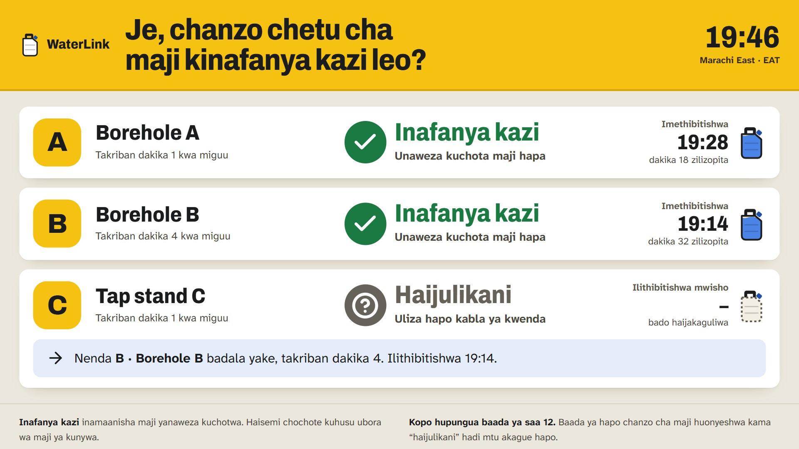
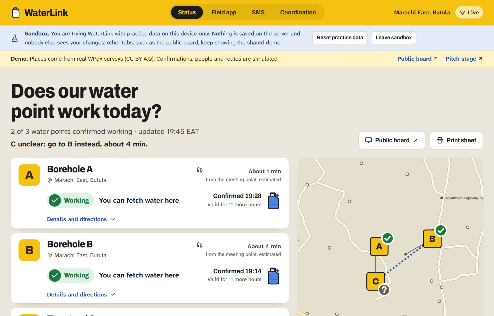
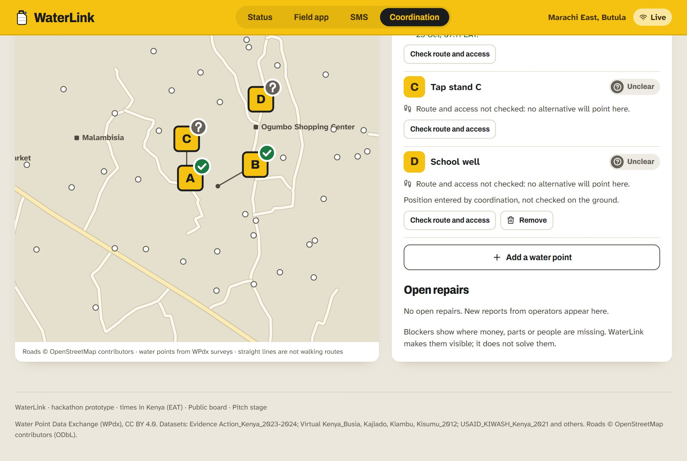
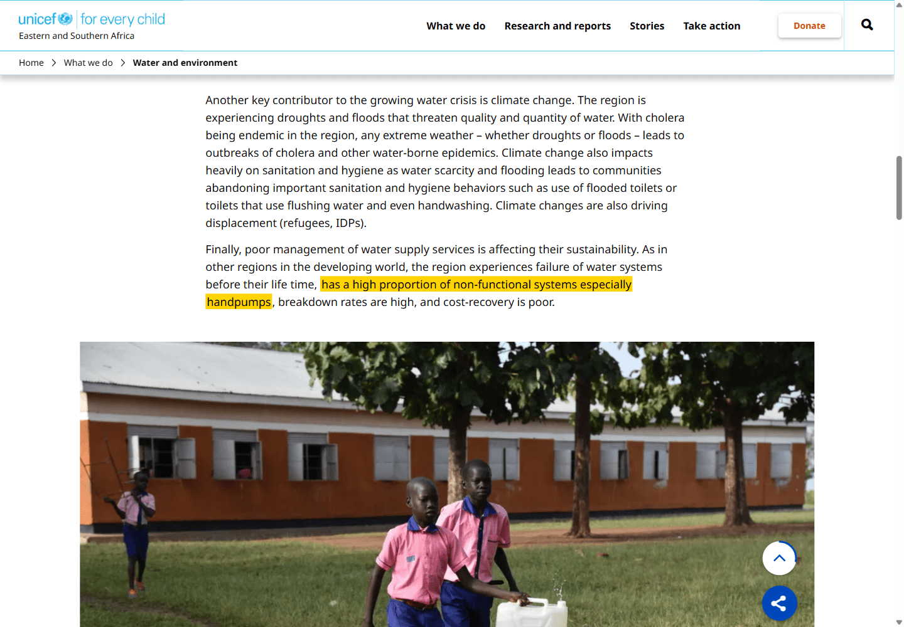

WaterLink
Does our water point work today?
The last confirmed state of every water point, and a repair that only counts once it is tested on site.

Does our water point work today?
The last confirmed state of every water point, and a repair that only counts once it is tested on site.
WaterLinkMost rural families fetch water at a hand pump or a protected well. When it breaks, the news travels slowly: the walk is wasted, the repair report disappears, and nobody is clearly responsible.
Up to one in three hand pumps does not work at any one time across Africa.
UNICEF Office of Innovation, “Smart Pumps”
Even with a repair contract, people can be without clean water for at least 2–3 days.
UNICEF, “Smart Pumps”: repairs are due 48–72 hours after a sensor reports a failure
In Kyuso, Kenya, the cost of repairs (19%), the time they take (17%) and how often pumps break (17%) top the list of complaints about hand pumps.
UNICEF, citing a user survey (Oxford/RFL, 2014)
WaterLink
Screenshot of unicef.org/innovation/smart-pumps (UNICEF Office of Innovation), captured 22 October 2026. The yellow highlight is ours; the unmarked capture is in the attached files.
WaterLink
1 in 4 people worldwide lack safely managed drinking water.
Rural coverage is 60%, urban 83%. 106 million people still drink surface water.
“Progress on household drinking water, sanitation and hygiene 2000–2024: Special focus on inequalities”, WHO/UNICEF Joint Monitoring Programme, published 25 August 2025. Page data.unicef.org/resources/jmp-report-2025, captured 22 October 2026. Highlight is ours.
WaterLink39,959 survey records for Kenya in the Water Point Data Exchange.
The newest was taken on 30 November 2024. None is from the last 12 months.
The median record is 5.7 years old; two in three are older than 3 years.
At their last survey 21% did not work (27% in Busia County).
Water Point Data Exchange (WPdx), data.waterpointdata.org, Kenya, retrieved 22 Oct 2026; our calculation (status taken from the visit-day water flag where a dataset’s status is constant). A survey record is a visit, not a guarantee of coverage.
WaterLink
The same board in Kiswahili (draft translation, labelled on the board), with the QR code to the SMS view. Also available as phone view and printed sheet.
WaterLink


Screens from the practice mode of the prototype. People, confirmations and routes are simulated.
WaterLink

WaterLink“Working” means water can be drawn. It says nothing about drinking-water quality, and every board says so.
WaterLink| Assumption | Evidence | Source | Status |
|---|---|---|---|
| Families cannot learn today’s state from existing data | Newest of 39,959 Kenyan survey records: 30 Nov 2024. Median age 5.7 years, 67% older than 3 years. | WPdx, own calculation | Supported |
| Many water points are broken at any time | Up to 1 in 3 hand pumps in Africa. 21% of Kenyan records non-functional at the last survey (27% in Busia). | UNICEF; WPdx | Supported |
| Waiting for repairs is what hurts | Repair time (17%), breakdown frequency (17%), repair cost (19%) lead the complaints in Kyuso, Kenya. At least 2–3 days without clean water. | UNICEF (Oxford/RFL 2014) | Supported |
| An organised repair service works | Handpump downtime in Kwale and Kitui fell from 27 days to under 3 with sensors and a maintenance service. | WASREB 2014 via REF 2021; SDSN TReNDS 2018 | Other project |
| Households without smartphones can be reached | 48.6% of rural and 64.6% of urban people in Kenya own a mobile phone, so the board and a short SMS flow. | Kenya Housing Survey 2023/24 (CA, KNBS) | Partly |
| Operators confirm often enough; 12 hours is the right validity | No evidence yet. 12 hours is a demo parameter. | – | Open |
| Someone will pay | No evidence yet. | – | Open |
WaterLinkOne neighbourhood, a handful of water points, one board, confirmations by a named person per point.
A partner who is responsible for the points: a county water office, an NGO, or a maintenance service of the FundiFix kind.
Baseline first. We measure the four numbers before the board goes up and agree the targets afterwards, not before.
We do not claim an impact today. We have a prototype, a data analysis and a plan to find out.
WaterLinkWaterLinkWe would potentially agree to take part in the IdeaLAB if we are selected. Validation and a first conversation with a partner are exactly where we need the programme most.
WaterLink
Scan to play the story on your phone
WaterLink
Screenshot of unicef.org/esa/water-and-environment (UNICEF Eastern and Southern Africa), captured 22 October 2026. The same page: “Over 226 million people in ESA (47 per cent) have no access to at least basic drinking water services.” Highlight is ours.
WaterLink